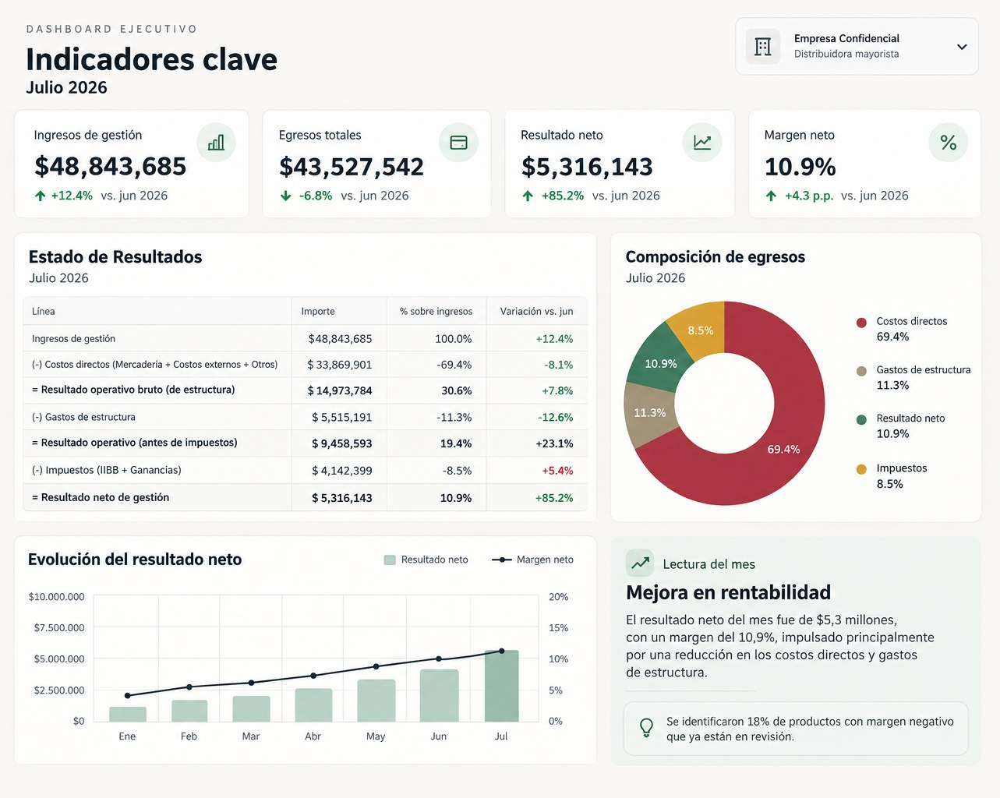

“ARCA me está complicando”
Revisamos deuda, intimaciones, presentaciones, saldos y obligaciones antes de decidir qué hacer.
En Épsilon no trabajás con un contador aislado: tenés un equipo que puede ayudarte con impuestos, sueldos, balances, costos y situaciones concretas del día a día.

Por eso preferimos empezar por tu problema real y no por una lista de trámites.
Revisamos deuda, intimaciones, presentaciones, saldos y obligaciones antes de decidir qué hacer.
Ordenamos el encuadre según actividad, forma jurídica, jurisdicciones y modalidad de trabajo.
Vemos altas, costos laborales, liquidación y obligaciones antes de que el cambio te agarre a mitad de camino.
Organizamos el traspaso, revisamos qué está presentado y detectamos qué quedó pendiente.
Trabajamos costos, márgenes, caja y tableros para volver a entender qué está pasando.
No arrancamos juzgando. Primero reconstruimos el estado actual, priorizamos y armamos un camino de regularización.
El objetivo no es solamente presentar formularios: queremos que sepas qué significa la información y qué decisiones puede afectar.
Liquidaciones, altas, bajas, deudas, saldos, Convenio Multilateral y planificación fiscal.
Altas, bajas, liquidación mensual y acompañamiento para ordenar las obligaciones laborales.
Estados contables y organización de documentación para socios, bancos y organismos.
Analizamos cuánto deja cada producto o servicio, estructura de gastos y punto de equilibrio.
Constituciones, cambios y evaluación de alternativas cuando la forma actual dejó de servir.
Podemos mirar una situación puntual o auditar el estado general antes de que tomes una decisión.
Impuestos, sueldos, costos, finanzas y tecnología se mezclan más de lo que parece en una pyme.
No empezamos por el sistema. Empezamos por qué te preocupa y qué necesita el negocio.
Revisamos el efecto impositivo, laboral, financiero o de gestión cuando corresponde.
Definimos prioridades, responsables y próximos pasos para que la consulta termine en una decisión concreta.

Cuando la información está ordenada, se puede usar para mirar margen, costos, evolución y caja, no solamente para llegar al vencimiento.
Algunas preguntas útiles antes de contratar o cambiar.
Además de matrícula y conocimiento técnico, mirá cómo se comunica, qué incluye el servicio, quién responde tus consultas y si puede explicar lo que hace. Para una pyme también suma que entienda costos, caja y decisiones de gestión.
Sí. Hay situaciones que pueden resolverse como trabajo puntual: una revisión, una intimación, una regularización, un análisis de costos o una constitución. Después se evalúa si tiene sentido un acompañamiento continuo.
Primero relevamos qué está presentado, qué falta, qué accesos y documentación existen y qué temas están abiertos. El objetivo es que el cambio no genere un vacío entre un estudio y otro.
Sí. El alcance depende de la actividad y del nivel de acompañamiento que necesites. Podemos trabajar desde una inscripción o consulta puntual hasta un seguimiento mensual más completo.
No. Estamos en La Plata, pero también trabajamos de forma remota con clientes de otras partes del país.
La primera reunión es sin cargo y sirve para entender qué necesitás realmente.